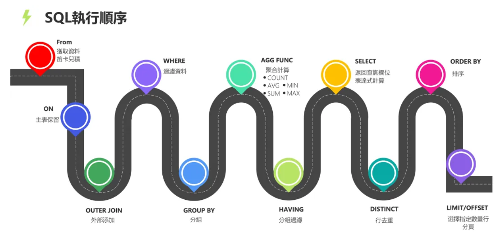
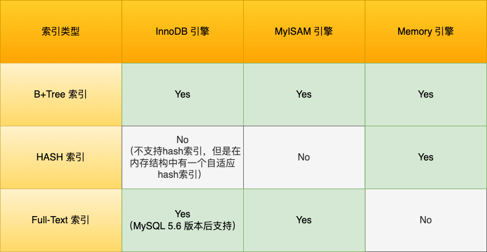

MySQL八股
4. MySQL
范式
- 1NF：要求数据库表的每一列都是不可分割的原子数据项
- 2NF：所有非码属性完全函数依赖于候选码
- 3NF：所有非主属性不依赖于其他非主属性，消除传递依赖
VARCHAR后面括号里的数字代表的是字符数，而不是字节数INT(1)和INT(10)的区别主要在于 显示宽度，而不是存储范围或数据类型本身的大小EXISTS的性能优于IN，特别是当子查询的表很大时。这是因为EXISTS一旦找到匹配项就会立即停止查询，而IN可能会扫描整个子查询结果集MySQL函数：CONCAT、LENGTH、SUBSTRING、REPLACE、ABS、POWER、NOW、CURDATE、COUNT、SUM、AVG、MAX、MIN

MySQL存储引擎
- InnoDB：InnoDB是MySQL的默认存储引擎，具有ACID事务支持、行级锁、外键约束等特性。它适用于高并发的读写操作，支持较好的数据完整性和并发控制。
- MyISAM：MyISAM是MySQL的另一种常见的存储引擎，具有较低的存储空间和内存消耗，适用于大量读操作的场景，但不支持事务、行级锁和外键约束，在并发写入和数据完整性方面有一定的限制。
- Memory：Memory引擎将数据存储在内存中，适用于对性能要求较高的读操作，在服务器重启或崩溃时数据会丢失，也不支持事务、行级锁和外键约束
- InnoDB 最小的锁粒度是行锁，MyISAM 最小的锁粒度是表锁；InnoDB 是聚簇索引，MyISAM 是非聚簇索引
- 
聚簇索引(一级)和二级索引
- 主键索引的 B+Tree 的叶子节点存放的是实际数据，所有完整的用户记录都存放在主键索引的 B+Tree 的叶子节点里；
- 二级索引的 B+Tree 的叶子节点存放的是主键值，而不是实际数据
- 一张表最多只有一个主键索引，索引列的值不允许有空值。后面新建的索引都是二级索引
- 当通过非聚簇索引查找数据时，首先在非聚簇索引中找到对应的主键值，然后通过这个主键值回溯到聚簇索引中查找实际的数据行，这个过程称为“回表”。
- 区分度小的字段（如性别只有两种）不适合做索引，因为只能选出50%的数据
前缀索引是指对字符类型字段的前几个字符建立的索引
联合索引
- 建立在多列上的索引称为联合索引。使用联合索引时，存在最左匹配原则，也就是按照最左优先的方式进行索引的匹配。
- 如果不遵循「最左匹配原则」，联合索引会失效，这样就无法利用到索引快速查询的特性了
- 建立联合索引时，要把区分度大的字段排在前面
- 例：创建了一个 (a, b, c) 联合索引，a=1 and b=2 and c=3或a=1 and b=2这种可以使用联合索引。而b=2这种不可以，a=1and c=3这种可以部分使用索引。
在创建表时，InnoDB 存储引擎会根据不同的场景选择不同的列作为索引：
- 如果有主键，默认会使用主键作为聚簇索引的索引键
- 如果没有主键，就选择第一个不包含 NULL 值的唯一列
- 在上面两个都没有的情况下，InnoDB 将自动生成一个隐式自增 id 列
UUID与自增ID比较
- uuid 相对顺序的自增 id 来说是毫无规律可言的，新行的值不一定要比之前的主键的值要大，所以 innodb 无法做到总是把新行插入到索引的最后，会频繁导致数据页的读取和B+树页分裂
- 而且，UUID 太占用内存。每个 UUID 由 36 个字符组成，查询时比较时间长，性能低
B+树的好处
- 非叶子节点不存放实际的记录数据，仅存放索引，因此数据量相同的情况下，B+树的非叶子节点可以存放更多的索引，树高度更低
- B+ 树有大量的冗余节点，在插入、删除的效率都更高
- B+ 树叶子节点之间用双向链表连接了起来，有利于范围查询和正反向遍历
索引失效
- 使用左或者左右模糊匹配，也就是like %xx 或者 like %xx%
- 在查询条件中对索引列使用函数
- 在查询条件中对索引列进行表达式计算
- 联合索引不遵循最左匹配原则
- 在 WHERE 子句中，如果在 OR 前的条件列是索引列，而在 OR 后的条件列不是索引列
覆盖索引是指一个索引包含了查询所需的所有列，因此不需要访问表中的数据行就能完成查询
事务的ACID特性
- 原子性（Atomicity）：一个事务中的所有操作，要么全部完成，要么全部不完成。执行过程中发生错误，会被回滚到事务开始前的状态。原子性是通过 undo log（回滚日志） 来保证的
- 一致性（Consistency）：是指事务操作前和操作后，数据满足完整性约束，数据库保持一致性状态。一致性是通过持久性+原子性+隔离性来保证
- 隔离性（Isolation）：数据库允许多个并发事务同时对其数据进行读写和修改的能力。隔离性是通过 MVCC（多版本并发控制） 或锁机制来保证的
- 持久性（Durability）：事务处理结束后，对数据的修改就是永久的，即便系统故障也不会丢失。持久性是通过 redo log （重做日志）来保证的
并发问题
- 脏读：一个事务「读到」了另一个「未提交事务修改过的数据」
- 不可重复读：在一个事务内多次读取同一个数据，如果出现前后两次读到的数据不一样的情况
- 幻读：在一个事务内多次查询某个符合查询条件的「记录数量」，前后两次查询到的记录数量不一样
事务隔离级别
- 读未提交（read uncommitted），指一个事务还没提交时，它做的变更就能被其他事务看到
- 读提交（read committed），指一个事务提交之后，它做的变更才能被其他事务看到。不可能发生脏读现象
- 可重复读（repeatable read），指一个事务执行过程中看到的数据，一直跟这个事务启动时看到的数据是一致的，MySQL InnoDB 引擎的默认隔离级别。不可能脏读和不可重复读现象
- 串行化（serializable）；会对记录加上读写锁，如果发生了读写冲突，后访问的事务必须等前一个事务执行完成，才能继续执行。所有并发问题都不会发生。
MVCC实现机制：开始事务后（执行 begin 语句后），在执行第一个查询语句后，会创建一个 Read View，后续的查询语句利用这个 Read View，通过这个 Read View 就可以在undo log 版本链找到事务开始时的数据，所以事务过程中每次查询的数据都是一样的，即使中途有其他事务插入了新纪录，是查询不出来这条数据的
MySQL锁
- 根据加锁的范围，可以分为全局锁、表级锁和行锁三类。

MySQL日志
- redo log 重做日志和undo log 回滚日志
- bin log 二进制日志，是 Server 层生成的日志，主要用于数据备份和主从复制。binlog 有 3 种格式类型，分别是 STATEMENT（默认格式，记录修改数据的 SQL）、ROW（记录最终行数据）、 MIXED
- relay log 中继日志，用于主从复制场景下，slave通过io线程拷贝master的bin log后本地生成的日志
binlog 两阶段提交
- 事务的提交过程有两个阶段，就是将 redo log 的写入拆成了两个步骤：prepare 和 commit，中间再穿插写入binlog

redo log与WAL(Write-Ahead Logging)技术

- 当有一条记录需要更新的时候，InnoDB 引擎会先更新内存（同时标记为脏页），然后将本次对这个页的修改以 redo log 的形式记录下来，这个时候更新就算完成了
- 后续，InnoDB 引擎会在适当的时候，由后台线程将缓存在 Buffer Pool 的脏页刷新到磁盘里，这就是 WAL （Write-Ahead Logging）技术。
主从复制
分库和分表
- 指把一个数据库/表中的数据分开存储
- 垂直指按逻辑分开，水平指把相同类型的数据分开存

MySQL八股
https://frosty-xue.github.io/2025/05/14/MySQL八股/